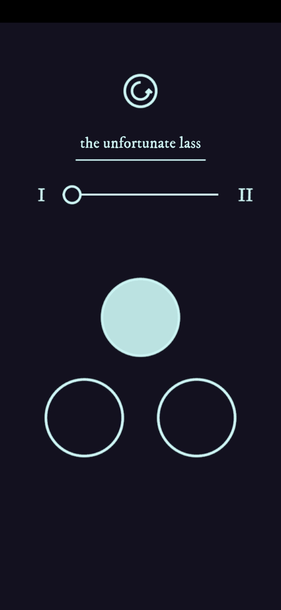

BeatChip '95 - Jack The Robot Games
Programmer, Composer
You find a beat up old PC in a hidden room with an arcane piece of music software. Can your beats lead you to success? Create tapes, get cash and upgrade your setup in this cosy music-making simulator
Get the game now or try the demo free on Steam
Crescengo - SLAP Collective
Programmer, Composer
Crescengo is a walking adventure you play on your phone. Commissioned by York Civic Trust, it takes players on a tour of 12 statues of the iconic tansy beetle, each representing a famous local trailblazer. Players must match the movements of the beetle by tapping on their screen and, if they’re quick enough, are rewarded with a short bio of the trailblazer and a piece of music.
It's Not You It's M.E. - Close Forum

Composer, Audio Integration
It's Not You, It's M.E. is an interactive point-and-click game based on the artist's experiences of living with Long COVID and M.E. It is a game you can't win, full of mini-games that often are impossible to complete.
Play it now on Steam
The Unfortunate Lass - Hevelwood

Programmer
An experiment in interactive performance, The Unfortunate Lass is a web app which allows audience members to provide the musical accompaniment to an otherwise a cappella performance by Hevelwood. Over the course of around 4 minutes, onscreen buttons split and morph to allow for a developing complexity of harmony.
Find out more on the Hevelwood website
Bored on the Ward - SLAP Collective
Programmer
Bored on the Ward is a mobile game made in collaboration with Blah Blah Theatre, South West Yorkshire NHS Trust, and patients on the Royal Calderdale Hospital Children's ward. Players travel to a hospital in an alternate universe and complete a number of minigames to put a band together and cure their boredom.
Now available for Android and IPhone
Yellow Handkerchief - Hevelwood

Programmer
The Yellow Handkerchief web app allows users to arrange their own version of the song taken from Hevelwood's album 'Of Greatness Receding'.
Play it now at Hevelwood's website.